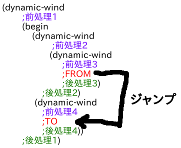
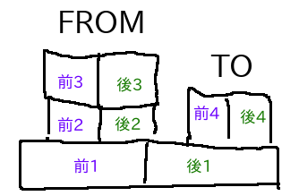
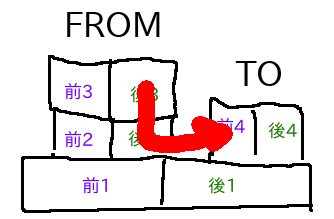
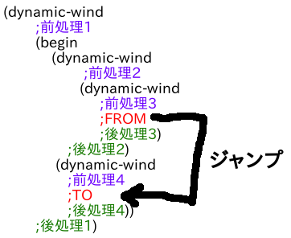
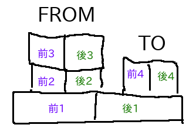
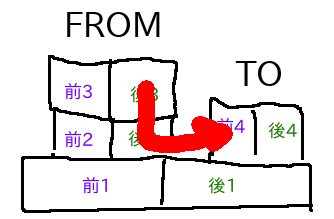

実装が大変なschemeの機能の紹介
2018-12-14
lisp Advent Calendar 2018 の14日目の記事です。
実装が大変なschemeの機能の紹介をします。
仕様はR7RS smallがターゲットです。後半になるにつれて雑になります。
2.dynamic-wind
3.equal?
4.多値
5.マクロ syntax-rules
現在の継続を第一引数の手続きに渡すというものです。
継続は次の計算のことです。
Schemeではこれをオブジェクトとして使えて、外側の脱出だけでなく内側に突入したりできます。
うまく説明できる気がしないので継続のまともな説明は省略します。
計算の途中をくくりだせるので、コンパイラの中間言語としても使われます。SSAと同じような使われ方です。
CPS変換の例
・元の式
・CPS変換した式
そして、CPS変換するとcall/ccはこのようにかけます
・この形式に変換すると、すべての手続き呼び出しはreturn考えなくてもよくなるので、末尾呼び出し最適化のサポートもそれほど苦労することなく実現できる
・CPSは最適化しやすい形に式が変換されるので、ついでにいろいろな最適化(例えば、同じ計算を省いたり)を適用できる
というメリットがあります。
それから、CPS変換で継続を実装する場合、組み込みの手続きもすべてCPSにしなくてはいけないので後から実装しにくい方針です。
C言語のsetjmp/longjmpみたいな感じです。
CPSよりかは、後からでも実装しやすいと思います。
例えば、ある処理の内では状態を1その外側では2としたい場合はこうなると思います。
dynamic-windは、継続によるジャンプを捕捉して前処理、後処理を行うように設定する手続きです。
上の例にdynamic-windを使うとこうなります。
例えば、下のようにジャンプしたとしましょう。lambdaは見難いので省きます。

そして、ジャンプ元とジャンプ先のdynamic-windによる環境を比較すると、こうなります。

後処理3 → 後処理2 → 前処理4 の順番に処理すれば良いことがわかりますね。

アルゴリズムとしては、
1.FROMからTOと共通部分にぶつかるまでFROMの後処理を実行していく。
2.共通部分からTOまでTOの前処理を実行していく。
となります。
printした結果が正しいとか、コンテナ(listやvector)を再帰的に比較して正しいとかそういうやつです。
ナイーブな実装はやるだけなのでそれほど難しくはありませんが、R7RSでは引数が循環構造でも必ず停止しなければならないという条件が加えられたので、少し大変になりました。
UnionFindとはUnionとFindの2つの操作ができるアルゴリズムです。
Union:2つのオブジェクトは同じグループであると定義する。
Find:2つのオブジェクトが同じグループか判定する。
これを一度比較したものをUnionして、毎回比較前にfindして同じグループならばそれ以上再帰的に比較しないようにするという方針です。
多値によって複数の値を返せることは、継続に複数の値を渡せるということです。
定義によるとvaluesはこうなっています
継続が複数の値をとれることを忘れていて、継続の実装を修正する羽目になりました。
実装楽そうに見えていたのですが、上のvaluesとCPS変換の相性が良くなかったことが障害となりました。
結局、多値オブジェクトというものを導入しましたが、評価器の実装が複雑になってろくでもないことになりました。
let風のマクロはsyntax-rulesで書くとこんなかんじになります。
my-letとマッチさせる部分の"((name value) ...)"は展開部では"name ... "や"value ... "という風に分解する実装が面倒です。
繰り返し"..."がネストしている部分とか実装バグらせまくりでした。
パターンが非真性リスト(P1 P2 ... Pn . Pm) の場合、
・同じ形の非真性リスト(P1 P2 .. Pn . Pm) と
・長さn以上の真性リスト(P1 P2 ... Pn Pn1 Pn2 Pn3 .. ) ;n+1以降はリストとしてPmにマッチする
の2通りにマッチできる仕様も場合分けが大変でした。
今度実装するときは、より実装の楽なマクロ(explicit-renamingとか)でポータブルに書いて使いまわせるようにしようと思います。
ちなみに、explicit-renamigでlet風のものをかくとこうなります。
explicit-renamingはScheme eval + 名前衝突回避機構だけで実装ができるので、syntax-rulesより楽に実装できます。
syntax-rulesでは全部自動的に衝突を回避してしまってアナフォリックマクロとかができないという欠点がありますが、explicit-renamigはそれができるのでより強力です。
実装が大変なschemeの機能の紹介をします。
仕様はR7RS smallがターゲットです。後半になるにつれて雑になります。
目次
1.継続 call/cc2.dynamic-wind
3.equal?
4.多値
5.マクロ syntax-rules
1.継続 call/cc
Schemeでcall-with-current-continuation、略すとcall/ccという手続きがあります。現在の継続を第一引数の手続きに渡すというものです。
継続は次の計算のことです。
Schemeではこれをオブジェクトとして使えて、外側の脱出だけでなく内側に突入したりできます。
うまく説明できる気がしないので継続のまともな説明は省略します。
実装方針1 プログラムをCPSに変形する。
CPS(継続渡しスタイル)はプログラム中のすべての継続を取り出して陽に表す形式です。計算の途中をくくりだせるので、コンパイラの中間言語としても使われます。SSAと同じような使われ方です。
CPS変換の例
・元の式
(define (fact x res)
(if (zero? x)
res
(fact (- x 1) (* x res))))・CPS変換した式
(define (fact x res K0)
(zero?& x
(lambda (K1)
(if K1
(K0 res)
(- x
1
(lambda (K2)
(*
x
res
(lambda (K3)
(fact K2 K3 K0)))))))))そして、CPS変換するとcall/ccはこのようにかけます
(define (call/cc proc K0)
(proc K0 K0))見ての通りCPS変換には、コードが長くなったり、手続き呼び出しが増えるという欠点がありますが、・この形式に変換すると、すべての手続き呼び出しはreturn考えなくてもよくなるので、末尾呼び出し最適化のサポートもそれほど苦労することなく実現できる
・CPSは最適化しやすい形に式が変換されるので、ついでにいろいろな最適化(例えば、同じ計算を省いたり)を適用できる
というメリットがあります。
それから、CPS変換で継続を実装する場合、組み込みの手続きもすべてCPSにしなくてはいけないので後から実装しにくい方針です。
実装方針2 VMの状態を保存する
call/ccした時にVMの状態を保存して、継続を呼び出した時にそれをロードすることで、call/ccした直後に飛ぶという方針です。C言語のsetjmp/longjmpみたいな感じです。
CPSよりかは、後からでも実装しやすいと思います。
2.dynamic-wind
dynamic-windは継続を使ってジャンプした場合でも状態を適切に保つようにできる手続きです。例えば、ある処理の内では状態を1その外側では2としたい場合はこうなると思います。
(set! state 1) ;ある処理 (set! state 2)継続があると、後処理の前に'ある処理'の外に飛び出したり、前処理の前に外から'ある処理'に突入したりする可能性があり、正しく動作する保証がないです。
dynamic-windは、継続によるジャンプを捕捉して前処理、後処理を行うように設定する手続きです。
上の例にdynamic-windを使うとこうなります。
(dynamic-wind
(lambda () (set! state 1))
(lambda ()
;ある処理
)
(lambda () (set! state 2)))実装方針
dynamic-windの作った設定をcall/cc時に継続オブジェクト内に保存して、呼び出した時に現在のdynamic-windの設定と比較して前処理や後処理を実行させるという方針です。例えば、下のようにジャンプしたとしましょう。lambdaは見難いので省きます。

そして、ジャンプ元とジャンプ先のdynamic-windによる環境を比較すると、こうなります。

後処理3 → 後処理2 → 前処理4 の順番に処理すれば良いことがわかりますね。

アルゴリズムとしては、
1.FROMからTOと共通部分にぶつかるまでFROMの後処理を実行していく。
2.共通部分からTOまでTOの前処理を実行していく。
となります。
3.equal?
equal?は比較手続きのひとつです。printした結果が正しいとか、コンテナ(listやvector)を再帰的に比較して正しいとかそういうやつです。
ナイーブな実装はやるだけなのでそれほど難しくはありませんが、R7RSでは引数が循環構造でも必ず停止しなければならないという条件が加えられたので、少し大変になりました。
実装方針
UnionFindを使うと効率よく循環構造を比較できます。この実装方針をどこかで読んだのですがどこで呼んだのか忘れてしまいました。UnionFindとはUnionとFindの2つの操作ができるアルゴリズムです。
Union:2つのオブジェクトは同じグループであると定義する。
Find:2つのオブジェクトが同じグループか判定する。
これを一度比較したものをUnionして、毎回比較前にfindして同じグループならばそれ以上再帰的に比較しないようにするという方針です。
4.多値
値を返すことと、継続に値を渡すことは等価なので、多値によって複数の値を返せることは、継続に複数の値を渡せるということです。
定義によるとvaluesはこうなっています
(define (values . things)
(call-with-current-continuation
(lambda (cont) (apply cont things))))継続が複数の値をとれることをサポートしていれば、問題はないのですが、継続が複数の値をとれることを忘れていて、継続の実装を修正する羽目になりました。
実装楽そうに見えていたのですが、上のvaluesとCPS変換の相性が良くなかったことが障害となりました。
結局、多値オブジェクトというものを導入しましたが、評価器の実装が複雑になってろくでもないことになりました。
5.マクロ syntax-rules
R7RS-small Schemeのマクロsyntax-rulesは伝統的なマクロと異なりevalと切り離されていて、自動で名前空間の衝突を回避する機構が備わっています。let風のマクロはsyntax-rulesで書くとこんなかんじになります。
(define-syntax my-let
(syntax-rules ()
((_ ((name value) ... ) body ... )
((lambda (name ... ) body ... ) value ... ))))見ての通り、Schemeのマクロはパターンマッチ的なものです。my-letとマッチさせる部分の"((name value) ...)"は展開部では"name ... "や"value ... "という風に分解する実装が面倒です。
繰り返し"..."がネストしている部分とか実装バグらせまくりでした。
パターンが非真性リスト(P1 P2 ... Pn . Pm) の場合、
・同じ形の非真性リスト(P1 P2 .. Pn . Pm) と
・長さn以上の真性リスト(P1 P2 ... Pn Pn1 Pn2 Pn3 .. ) ;n+1以降はリストとしてPmにマッチする
の2通りにマッチできる仕様も場合分けが大変でした。
今度実装するときは、より実装の楽なマクロ(explicit-renamingとか)でポータブルに書いて使いまわせるようにしようと思います。
ちなみに、explicit-renamigでlet風のものをかくとこうなります。
(define-syntax my-let
(er-macro-transformer
(lambda (form rename compare)
(let ((bindings (cadr form))
(bodies (cddr form)))
`((,(rename 'lambda) ,(map car bindings) ,@bodies) ,@(map cadr bindings))))))explicit-renamingはScheme eval + 名前衝突回避機構だけで実装ができるので、syntax-rulesより楽に実装できます。
syntax-rulesでは全部自動的に衝突を回避してしまってアナフォリックマクロとかができないという欠点がありますが、explicit-renamigはそれができるのでより強力です。